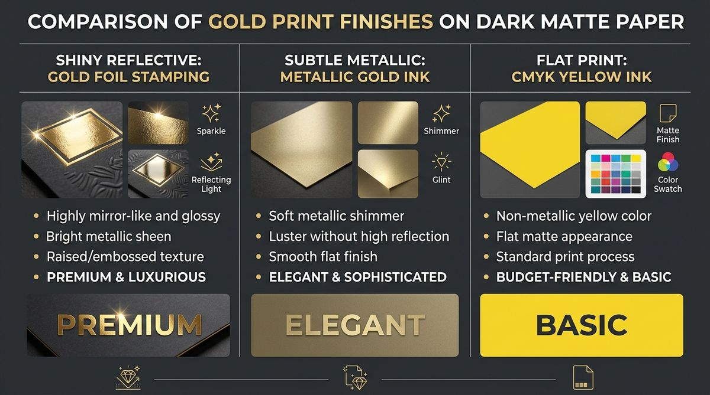
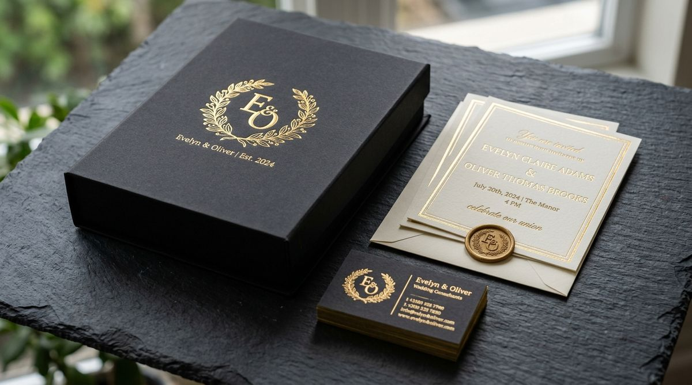

If you have searched for ateliergolddruck, you may have noticed that the term is not as straightforward as a typical commercial product name.
The word combines three distinct concepts: Atelier, Gold, and Druck. In the German language, Druck translates directly to printing, while Golddruck refers to the technical art of printing or finishing paper, leather, and packaging with a metallic-gold sheen. An Atelier signifies an artist’s studio, creative workshop, or bespoke design house.
This combination makes ateliergolddruck particularly fascinating. It describes a bridge between creative graphic design, gold leaf finishing, luxury stationery, premium packaging, fine art editioning, and specialized print craftsmanship.
What Does Ateliergolddruck Mean?
At its core, ateliergolddruck can be understood as a compound concept connecting an artistic design atelier with Golddruck (the German term for gold print processing).
Deconstructing the term reveals its fundamental components:
- Atelier — a creative studio, artisan workshop, or specialized design laboratory.
- Gold — the precious metal appearance, lustrous warm tone, or reflective surface effect.
- Druck — German for printing, impression, or physical presswork.
- Golddruck — the specialized discipline of gold printing and metallic foil presswork.
In design and manufacturing, ateliergolddruck represents an intentional philosophy where metallic gold is integrated as a structural design element rather than a simple decorative afterthought. This includes gold foil lettering, luxury brand logos, geometric foil borders, gilded book edges, embossed certificates, and custom packaging boxes.
Disambiguating Keyword Search Noise: Real Entity vs. Unrelated Topics
When searching for ateliergolddruck on search engines like Google, search algorithms may occasionally retrieve seemingly unrelated web pages. It is vital to separate the authentic graphic design and printing entity from superficial keyword matches:
- Atelier Video Game Franchise: The popular JRPG series by Gust/Koei Tecmo (such as Atelier Ryza or Atelier Escha & Logy) frequently features item crafting involving gold ores or gold coins.
- Pokémon (Golduck / Gold): The classic Generation I Pokémon Golduck or references to Pokémon Gold Version often populate algorithmic search indexes due to character strings.
- Custom Gold Trucks: Vehicle restoration blogs highlighting metallic gold painted semi-trucks (e.g. custom Ford F1 or Pride & Polish trucks) share phonetic keyword overlap.
Understanding these search nuances ensures that designers, printmakers, and brand managers locate true expertise in gold printing and atelier graphic finishing rather than unrelated digital pop culture entities.
What Is Golddruck?
Golddruck encompasses all specialized printing and finishing methods designed to impart a gold or metallic-gold appearance onto physical media.
Unlike standard flat inks, gold printing creates dynamic visual textures, ranging from subtle shimmer to mirror-like reflection:
- Soft Matte Gold: Understated, smooth, satin finish with low specular shine.
- Warm Metallic Gold: Rich, classic golden sheen with warm yellow and bronze undertones.
- Bright Reflective Gold: High-gloss mirror foil finish that catches direct light.
- Champagne Gold: Elegant, pale golden tint with sophisticated silver-yellow balance.
- Antique Gold: Deep, weathered gold appearance ideal for heritage and classic branding.
- Brushed Gold: Textured metallic foil featuring subtle directional grain lines.
Why Is Gold Printing So Popular in Luxury Design?
Gold possesses a unique visual and psychological quality that standard flat colors cannot mirror. Across human history, gold visual accents have signified:
"Gold in design is not merely a color choice; it is an interaction with physical light. When used with restraint, a small gold accent elevates simple paper into a memorable tactile object."
Consider a minimalist wedding invitation or corporate card printed in solid black. Adding a single, impeccably hot-stamped gold foil monogram instantly elevates the piece from basic paper to an executive luxury artifact. The secret lies in visual restraint: in premium print design, less gold creates a stronger impact.
Ateliergolddruck and the Philosophy of Craftsmanship
The word Atelier transforms how we view print production. Rather than treating printing as a high-speed, automated commodity, an atelier approach prioritizes:
- Substrate Curation: Selecting heavy-weight cotton, linen-textured, or soft-touch black papers.
- Micro-Typography: Precise tracking, kerning, and line thickness calibrated for foil pressure.
- Surface Tactility: Combining blind embossing, debossing, and foil stamping for multi-sensory feedback.
- Attention to Detail: Hand-inspected sheets, custom foil dies, and tailored ink density.
How Does Gold Printing Work? (Technique Breakdown)
There is no single uniform process for creating a gold effect. Print studios employ various technologies depending on project volume, budget, and desired aesthetics:
1. Metallic Gold Ink (Offset & Lithography)
Metallic inks incorporate microscopic reflective copper-zinc alloy flakes suspended in liquid binder. As the ink dries on coated paper, the flakes align parallel to the surface, generating a smooth metallic sheen. It is ideal for continuous background patterns, fine line drawings, and high-volume press runs.
2. Hot Foil Stamping (Traditional Presswork)
Hot foil stamping is the undisputed gold standard of luxury finishing. A brass or magnesium die is heated and pressed against a multi-layer foil roll. Heat activates a release layer, bonding bright metallic aluminum to the substrate under heavy pressure.
3. Digital Foil & Sleeking Technology
Modern digital foil systems apply foil directly onto toner or specialized adhesive without requiring custom metal dies. This enables short runs, variable data printing (e.g. individualized recipient names), and rapid prototyping.
4. Specialty Gold Toner Systems
High-end digital presses (such as Xerox Iridesse or Fuji Film Revoria) utilize dry metallic gold toners. This process allows gold to be printed inline with CMYK graphics in a single pass.
5. Screen Printing with Metallic Pigments
Screen printing passes thick metallic inks through mesh stencils. It is widely used for heavy cardstock, wooden boxes, textiles, and tactile art prints requiring opaque coverage.

Gold Foil vs. Metallic Gold Ink: Technical Comparison
Choosing between foil stamping and metallic ink depends on the desired visual impact, detail density, and budget. The table below details their key differences:
| Feature Category | Hot Gold Foil Stamping | Metallic Gold Ink |
|---|---|---|
| Visual Reflectivity | Highly mirror-like, intense specular shine | Soft, satin shimmer; subtle sheen |
| Tactile Quality | Slightly debossed / tactile surface depth | Flat to paper surface |
| Paper Compatibility | Outstanding on dark, black & textured paper | Best on coated white/light paper |
| Fine Detail Clarity | Requires min 0.5pt line width to prevent filled counter-spaces | Executes ultra-fine lines and tiny serif typography cleanly |
| Short Run Efficiency | Requires custom metal die setup fees | Often economical for offset print runs |
| Luxury Perception | Maximum high-end prestige factor | Elegant, subtle corporate feel |
Gold Printing vs. Ordinary CMYK Yellow Ink
A frequent mistake in graphic design is assuming that a gold color hex code (such as #D4AF37) printed via standard CMYK process inks will appear metallic.
CMYK ink relies on light absorbing pigments on white paper. It cannot physically reflect specular light rays. Metallic gold printing, whether foil or metallic ink, contains physical metallic particles or aluminum layers that dynamically reflect ambient light as the printed card is rotated.
Best Materials & Substrates for Gold Printing
The choice of paper stock profoundly alters how gold printing is perceived:
- Deep Black Cardstock (350-600 GSM): Creates high visual contrast. Gold foil on dark matte paper remains the ultimate luxury hallmark.
- Navy Blue & Royal Blue Stock: Communicates corporate prestige, formal authority, and financial heritage.
- Crisp Pure White Paper: Delivers clean, modern, and minimalist luxury suitable for high-end fashion and art galleries.
- Cream & Warm Ivory Linen: Evokes traditional elegance, wedding romance, and boutique heritage.
- Cotton & Textured Substrates: Adds tactile handcrafted warmth, though foil stamping temperatures must be carefully calibrated.
Where Is Ateliergolddruck Most Useful?

Gold printing finishes are widely deployed across industries where brand perception directly influences product value:
- Wedding & Event Stationery: Names, monograms, borders, and envelope liners stamped in foil create unforgettable keepsakes.
- Executive Business Cards: A gold foil logo paired with duplexed 600 GSM cardstock establishes immediate authority.
- Boutique Packaging Boxes: Cosmetics, luxury perfumes, chocolate boxes, and jewelry cases utilize gold foil logos to capture retail shelf attention.
- Book Covers & Collector Editions: Hardcover cloth and leather titles decorated with gold leaf foil typography.
- Certificates, Diplomas & Badges: Metallic gold seals provide official authenticity and prestige.
- Fine Art Prints & Wall Decor: Artists incorporate foil accents to add limited-edition metallic brilliance to illustrations.
How to Design Artwork for Gold Printing
Creating digital vector artwork for gold presswork requires specialized prepress rules:
- Use Vector Artwork: Always supply gold elements as crisp vector paths (EPS, AI, PDF) rather than raster bitmaps.
- Avoid Razor-Thin Lines: Keep line weights at least 0.5pt to ensure clean foil release without flaking.
- Create a Dedicated Spot Color Layer: Separate gold elements onto a top layer named
Gold_Foilset to 100% Spot Color with Overprint enabled. - Maintain Strategic Spacing: Ensure negative space inside letters (e.g. 'e', 'a', 'o') is wide enough to prevent gold foil fill-in during hot pressing.
Typography Guidelines for Metallic Gold Presswork
Typography choice directly influences whether gold printing appears timeless or cluttered. Elegant serif typefaces (such as Cinzel, Bodoni, or Garamond) harmonize naturally with gold foil. Clean sans-serif fonts (such as Helvetica Now or Plus Jakarta Sans) provide a sleek, contemporary luxury look. Avoid excessively delicate script fonts in small point sizes, as small loops can fill in during hot stamping.
Gold Printing in Luxury Brand Strategy
In luxury brand architecture, color is a strategic asset. Gold communicates quality, legacy, and exclusivity. However, leading global luxury houses apply gold sparingly: a small embossed logo on a matte black perfume box creates far greater desire than covering an entire container in gold foil.
Is Gold Printing Expensive? (Cost Analysis)
The cost of gold printing depends heavily on the chosen production method and total order quantity:
- Small Runs (25 – 100 pieces): Digital gold foil or digital metallic toner is cost-effective because custom metal dies are not required.
- Medium to Large Runs (500+ pieces): Traditional hot foil stamping becomes highly economical per unit, as die creation costs are distributed across large quantities.
How to Choose a Professional Gold Printing Atelier
When selecting a print partner for custom golddruck work, evaluate the following factors:
- What foil stamping presses do they operate? (e.g. Heidelberg Windmill, Kluge, or automatic cylinder presses).
- Do they offer physical press proofs before running the full job?
- What substrate weights and cotton paper collections do they stock?
- Can they combine foil stamping with blind debossing or edge gilding?
Why Physical Proofs Are Essential
Digital computer screens generate color using emissive RGB light. Printed metallic gold interacts with physical ambient light reflecting off paper fibers. Therefore, inspecting a physical sample sheet under natural lighting is the only way to evaluate mirror gloss, paper texture, and contrast accurately.
Common Mistakes in Gold Printing to Avoid
- Overusing Gold: Applying gold foil to body text renders documents unreadable. Limit gold to headlines, logos, and accents.
- Selecting the Wrong Paper Surface: Heavy glitter or rough handmade texture can cause minor gaps in foil coverage.
- Omitting Prepress Proofing: Skipping press proofs on custom luxury runs can lead to unexpected color misalignments.
Sustainable Eco-Friendly Gold Printing
Modern atelier gold printing has made great strides in environmental sustainability. Stamped foil layers are ultra-thin (less than 2.5 microns) and do not hinder the repulpability or recycling of paper cardstock according to FFI and INGEDE test protocols. Choosing FSC-certified recycled paper stocks ensures luxury design aligns with ecological responsibility.